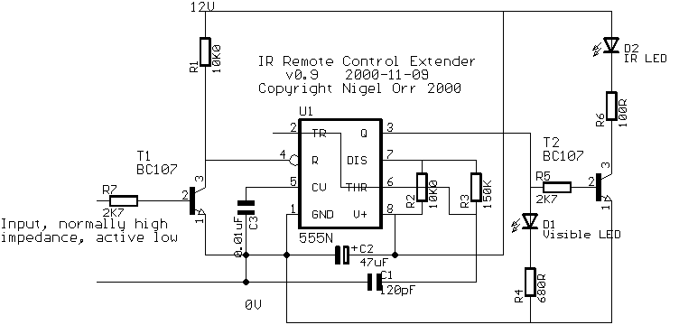

This is based on a circuit from the superb electronics info pages at http://www.epanorama.net. If you want to know more about IR remote controls, from circuit details to data protocols, look there for info (under 'remote control')!
This design allows multiple transmitters and receivers, all connected to a common 2-pin bus, consisting of data and ground. Data is active-low, pulled up by a resistor (in the transmitters) when not in use. This system was prototyped using the Temic TSOP 1838 module, then available from Maplin in the UK, which has now been discontinued. Keith Doxey may be able to sell you some.
If anyone comes across another source for it, please let me know- contact details below. In the meantime, the Sharp IS1U60, available from RS Components, may do the same job (I've not yet tried it). For reference, the Temic part draws 1mA, has a usable range of at least 6m indoors, and 1-2m under bright fluorescent light, and includes a 100k pullup resistor on the output.
The TSOP1838 device is a complete IR receiver in a 3-pin package. All that is required is a 5V power supply, applied to the appropriate pins. In the near future, I will add a schematic for a simple supply derived from a 12V supply (eg a battery or a 'wall-wart' type supply)
Most equipment is quite tolerant of modulation frequencies varying by about 5% (eg 38kHz nominal, 36-40kHz will work), but if you have an oscilloscope or frequency meter, you can change R3 to get the output closer to 38kHz (capacitor tolerances are high, so the circuit as built could oscillate at 38kHz +/- 20%, reducing range). If you don't have access to any test equipment, and you need maximum range, fit a 200K trimmer in place of R3 and adjust it by trial and error for best results.
(generated using Eagle from http://www.cadsoft.de - highly recommended, freeware version available for Windows/Linux)
This circuit is distributed as 'feedbackware'- if you build it, let me know how you get on, and any helpful hints or modifications that might be useful to other constructors. Thanks to those who have built the circuit already, and noticed problems or made suggestions- your contribution is appreciated.

Note that this circuit transmits demodulated data between receivers and transmitters, so if your remote control uses an odd frequency (outside the typical 36-40kHz), you'll need to modify things appropriately at the receiver (use a receiver which detects the appropriate modulation frequency) and transmitter (change the components to get the right modulation frequency, see NE555 data sheets for details). There's no reason why you can't have your modified system coexisting on the same bus as other 'normal' transmitters and receivers.
This transmitter produces a 38kHz stream from the IR LED (D2), when the input pin is pulled low. Transistor T2 drives the LED at a reasonable current. Typically voltage drop across an IR LED is 1.5V, so the resistor needs to drop about 10V, at about 0.1A. Most IR LEDs can take more power than that at low duty cycles, so you might be able to use a bigger transistor and a smaller resistor to drive up to 1A peak through the LED if you really need long range. The 100 ohm resistor should be a 0.5W type, or better.
Conversely, if you only need short range (by positioning transmitters within a metre of the devices being controlled), you may be able to dispense with the transistor, driving the LED directly from the timer output. Typical maximum drive current for a 7555 timer is 100mA, so play it safe and use a 200 ohm or larger resistor (1/4W should be adequate).
If you have acess to a spare pair of wires in your security system's PIR detectors, IR receivers can be mounted in the detector, if not, have a look at the info on my retro-wiring page for hints on running cables.
If this is the first electronic circuit you have built, some of the above information may seem like gibberish. Several other people who are building the system hope to document their hints tips and experiences on a web page, when it happens, the links will appear here!